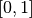

Classification¶
Feature classification and training¶
The Orfeo ToolBox provided applications to train a supervised or unsupervised classifier from different set of features and to use the generated classifier for vector data classification. Those features can be information extracted from images (see feature extraction section) or it can be different types of features such as the perimeter, width, or area of a surface present in a vector data file in an ogr compatible format.
Train a classifier with features¶
The TrainVectorClassifier application provide a way to train a classifier with an input set of labeled geometries and a list of features to consider for classification.
otbcli_TrainVectorClassifier -io.vd samples.sqlite
-cfield CODE
-io.out model.rf
-classifier rf
-feat perimeter area width
The -classifier parameter allows to choose which machine learning
model algorithm to train. You have the possibility to do the unsupervised
classification,for it, you must to choose the Shark kmeans classifier.
Please refer to the TrainVectorClassifier application reference documentation.
In case of multiple sample files, you can add them to the -io.vd
parameter.
The feature to be used for training must be explicitly listed using
the -feat parameter. Order of the list matters.
If you want to use a statistic file for features normalization, you
can pass it using the -io.stats parameter. Make sure that the
order of feature statistics in the statistics file matches the order
of feature passed to the -feat option.
The field in vector data allowing to specify the label of each sample
can be set using the -cfield option.
By default, the application will estimate the trained classifier
performances on the same set of samples that has been used for
training. The -io.vd parameter allows for the specification of different
sample files for this purpose, for a more fair estimation of the
performances. Note that this scheme to estimate the performance can also
be carried out afterwards (see Validating the classification model
section).
Feature classification¶
Once the classifier has been trained, one can apply the model to classify a set of features on a new vector data file using the VectorClassifier application:
otbcli_VectorClassifier -in vectorData.shp
-model model.rf
-feat perimeter area width
-cfield predicted
-out classifiedData.shp
This application outputs a vector data file storing sample values and classification labels. The output vector file is optional. If no output is given to the application, the input vector data classification label field is updated. If a statistics file was used to normalize the features during training, it shall also be used here, during classification.
Note that with this application, the machine learning model may come from a training on image or vector data, it doesn’t matter. The only requirement is that the chosen features to use should be the same as the one used during training.
Validating classification¶
The performance of the model generated by the TrainVectorClassifier or TrainImagesClassifier applications is directly estimated by the application itself, which displays the precision, recall and F-score of each class, and can generate the global confusion matrix for supervised algorithms. For unsupervised algorithms a contingency table is generated. These results are output as an *.CSV file.
Pixel based classification¶
Orfeo ToolBox ships with a set of application to perform supervised or
unsupervised pixel-based image classification. This framework allows
to learn from multiple images, and using several machine learning method
such as SVM, Bayes, KNN, Random Forests, Artificial Neural Network, and
others…(see application help of TrainImagesClassifier and
TrainVectorClassifier for further details about all the available
classifiers). Here is an overview of the complete workflow:
- Compute samples statistics for each image
- Compute sampling rates for each image (only if more than one input image)
- Select samples positions for each image
- Extract samples measurements for each image
- Compute images statistics
- Train machine learning model from samples
Samples statistics estimation¶
The first step of the framework is to know how many samples are
available for each class in your image. The PolygonClassStatistics
will do this job for you. This application processes a set of training
geometries and an image and outputs statistics about available samples
(i.e. pixel covered by the image and out of a no-data mask if
provided), in the form of a XML file:
- number of samples per class
- number of samples per geometry
Supported geometries are polygons, lines and points. Depending on the geometry type, this application behaves differently:
- polygon: select pixels whose center falls inside the polygon
- lines: select pixels intersecting the line
- points: select closest pixel to the provided point
The application will require the input image, but it is only used to
define the footprint in which samples will be selected. The user can
also provide a raster mask, that will be used to discard pixel
positions, using parameter -mask.
A simple use of the application PolygonClassStatistics could be as
follows:
otbcli_PolygonClassStatistics -in LANDSAT_MultiTempIm_clip_GapF_20140309.tif
-vec training.shp
-field CODE
-out classes.xml
The -field parameter is the name of the field that corresponds to class
labels in the input geometries.
The output XML file will look like this:
<?xml version="1.0" ?>
<GeneralStatistics>
<Statistic name="samplesPerClass">
<StatisticMap key="11" value="56774" />
<StatisticMap key="12" value="59347" />
<StatisticMap key="211" value="25317" />
<StatisticMap key="221" value="2087" />
<StatisticMap key="222" value="2080" />
<StatisticMap key="31" value="8149" />
<StatisticMap key="32" value="1029" />
<StatisticMap key="34" value="3770" />
<StatisticMap key="36" value="941" />
<StatisticMap key="41" value="2630" />
<StatisticMap key="51" value="11221" />
</Statistic>
<Statistic name="samplesPerVector">
<StatisticMap key="0" value="3" />
<StatisticMap key="1" value="2" />
<StatisticMap key="10" value="86" />
<StatisticMap key="100" value="21" />
<StatisticMap key="1000" value="3" />
<StatisticMap key="1001" value="27" />
<StatisticMap key="1002" value="7" />
...
Sample selection¶
Now, we know exactly how many samples are available in the image for
each class and each geometry in the training set. From these
statistics, we can now compute the sampling rates to apply for each
class, and perform the sample selection. This will be done by the
SampleSelection application.
There are several strategies to compute those sampling rates:
- Constant strategy: All classes will be sampled with the same number of samples, which is user-defined.
- Smallest class strategy: The class with the least number of samples will be fully sampled. All other classes will be sampled with the same number of samples.
- Percent strategy: Each class will be sampled with a user-defined percentage (same value for all classes) of samples available in this class.
- Total strategy: A global number of samples to select is divided proportionally among each class (class proportions are enforced).
- Take all strategy: Take all the available samples.
- By class strategy: Set a target number of samples for each class. The number of samples for each class is read from a CSV file.
To actually select the sample positions, there are two available sampling techniques:
- Random: Randomly select samples while respecting the sampling rate.
- Periodic: Sample periodically using the sampling rate.
The application will make sure that samples spans the whole training set extent by adjusting the sampling rate. Depending on the strategy to determine the sampling rate, some geometries of the training set may not be sampled.
The application will accept as input the input image and training geometries, as well class statistics XML file computed during the previous step. It will output a vector file containing point geometries which indicate the location of the samples.
otbcli_SampleSelection -in LANDSAT_MultiTempIm_clip_GapF_20140309.tif
-vec training.shp
-instats classes.xml
-field CODE
-strategy smallest
-outrates rates.csv
-out samples.sqlite
The csv file written by the optional -outrates parameter sums-up what
has been done during sample selection:
#className requiredSamples totalSamples rate
11 941 56774 0.0165745
12 941 59347 0.0158559
211 941 25317 0.0371687
221 941 2087 0.450886
222 941 2080 0.452404
31 941 8149 0.115474
32 941 1029 0.91448
34 941 3770 0.249602
36 941 941 1
41 941 2630 0.357795
51 941 11221 0.0838606
This image shows the polygons of the training with a color corresponding to their class. The red dot shows the samples that have been selected.
Samples extraction¶
Now that the locations of the samples are selected, we will attach
measurements to them. This is the purpose of the SampleExtraction
application. It will walk through the list of samples and extract the
underlying pixel values. If no -out parameter is given, the
SampleExtraction application can work in update mode, thus allowing
to extract features from multiple images of the same location.
Features will be stored in fields attached to each sample. Field name
can be generated from a prefix a sequence of numbers (i.e. if
prefix is feature_ then features will be named feature_0,
feature_1, …). This can be achieved with the -outfield prefix
option. Alternatively, one can set explicit names for all features
using the -outfield list option.
otbcli_SampleExtraction -in LANDSAT_MultiTempIm_clip_GapF_20140309.tif
-vec samples.sqlite
-outfield prefix
-outfield.prefix.name band_
-field CODE
Attributes table of the updated samples file.
Working with several images¶
If the training set spans several images, the MultiImageSamplingRate
application allows to compute the appropriate sampling rates per image
and per class, in order to get samples that span the entire extents of the images.
It is first required to run the PolygonClassStatistics application
on each image of the set separately. The MultiImageSamplingRate
application will then read all the produced statistics XML files and
derive the sampling rates according the sampling strategy. For more
information, please refer to the Samples statistics estimation section.
There are 3 modes for the sampling rates estimation from multiple images:
- Proportional mode: For each class, the requested number of samples is divided proportionally among the images.
- Equal mode: For each class, the requested number of samples is divided equally among the images.
- Custom mode: The user indicates the target number of samples for each image.
The different behaviors for each mode and strategy are described as follows.
and  refers resp. to the total number and needed number
of samples in image
refers resp. to the total number and needed number
of samples in image  for class
for class  . Let’s call
. Let’s call  the total number of
image.
the total number of
image.
- Strategy = all
- Same behavior for all modes proportional, equal, custom: take all samples
- Strategy = constant (let’s call the global number of samples per
class required)
- Mode = proportional: For each image and each class ,
- Mode = equal: For each image and each class ,

- Mode = custom: For each image and each class ,
where is the custom requested number of samples
for image i
- Mode = proportional: For each image
- Strategy = byClass (let’s call the global number of samples for
class c)
- Mode = proportional: For each image and each class ,
- Mode = equal: For each image and each class ,
- Mode = custom: For each image and each class ,
where is the custom requested number of
samples for each image and each class
- Mode = proportional: For each image
- Strategy = percent
- Mode = proportional: For each image and each class ,
where
 is the user-defined percentage
is the user-defined percentage - Mode = equal: For each image and each class ,
where is the user-defined percentage
- Mode = custom: For each image and each class ,
where is the user-defined percentage for image
- Mode = proportional: For each image
- Strategy = total
- Mode = proportional: For each image and each class ,
where is the total number of samples specified
- Mode = equal: For each image and each class ,
where is the total number of samples specified
- Mode = custom: For each image and each class ,
where is the total number of samples specified for image
- Mode = proportional: For each image
- Strategy = smallest class
- Mode = proportional: the smallest class is computed globally, then this smallest size is used for the strategy constant+proportional
- Mode = equal: the smallest class is computed globally, then this smallest size is used for the strategy constant+equal
- Mode = custom: the smallest class is computed and used for each image separately
The MultiImageSamplingRate application can be used as follows:
otbcli_MultiImageSamplingRate -il stats1.xml stats2.xml stats3.xml
-out rates.csv
-strategy smallest
-mim proportional
The output filename from -out parameter will be used to generate as
many filenames as necessary (e.g. one per input filename), called
rates_1.csv, rates_2.csv …
Once rates are computed for each image, sample selection can be performed on each corresponding image using the by class strategy:
otbcli_SampleSelection -in img1.tif
-vec training.shp
-instats stats1.xml
-field CODE
-strategy byclass
-strategy.byclass.in rates_1.csv
-out samples1.sqlite
Samples extraction can then be performed on each image b y following the Samples extraction step. The learning application can process several samples files.
Images statistics estimation¶
Some machine learning algorithms converge faster if the range of
features is or . Other will be sensitive
to relative ranges between feature, e.g. a feature with a larger range
might have more weight in the final decision. This is for instance the
case for machine learning algorithm using euclidean distance at some
point to compare features. In those cases, it is advised to normalize
all features to the range before performing the
learning. For this purpose, the ComputeImageStatistics application
allows to compute and output to an XML file the mean and standard
deviation based on pooled variance of each band for one or several
images.
otbcli_ComputeImagesStatistics -il im1.tif im2.tif im3.tif
-out images_statistics.xml
The output statistics file can then be fed to the training and classification applications.
Training the model¶
Now that the training samples are ready, we can perform the learning
using the TrainVectorClassifier application.
otbcli_TrainVectorClassifier -io.vd samples.sqlite
-cfield CODE
-io.out model.rf
-classifier rf
-feat band_0 band_1 band_2 band_3 band_4 band_5 band_6
In case of multiple samples files, you can add them to the -io.vd
parameter (see Working with several images section).
For more information about the training process for features please refer to the Train a classifier with features section.
Using the classification model¶
Once the classifier has been trained, one can apply the model to classify pixel inside defined classes on a new image using the ImageClassifier application:
otbcli_ImageClassifier -in image.tif
-model model.rf
-out labeled_image.tif
You can set an input mask to limit the classification to the mask area with value >0.
-imstat images_statistics.xml
Validating the classification model¶
The Orfeo ToolBox training applications provides information about the performance of the generated model (see Validating classification ).
With the ConputeConfusionMatrix application, it is also possible to estimate the performance of a model from a classification map generated with the ImageClassifier application. This labeled image is compared to positive reference samples (either represented as a raster labeled image or as a vector data containing the reference classes). It will compute the confusion matrix and precision, recall and F-score of each class too, based on the ConfusionMatrixCalculator class.
If you have made an unsupervised classification, it must be specified
to the ConputeConfusionMatrix application. In this case, a contingency table
have to be create rather than a confusion matrix. For further details,
see format parameter in the application help of ConputeConfusionMatrix.
otbcli_ComputeConfusionMatrix -in labeled_image.tif
-ref vector
-ref.vector.in vectordata.shp
-ref.vector.field Class (name_of_label_field)
-out confusion_matrix.csv
Fancy classification results¶
Color mapping can be used to apply color transformations on the final gray level label image. It allows to get an RGB classification map by re-mapping the image values to be suitable for display purposes. One can use the ColorMapping application. This tool will replace each label with an 8-bits RGB color specified in a mapping file. The mapping file should look like this:
# Lines beginning with a # are ignored
1 255 0 0
In the previous example, 1 is the label and 255 0 0 is a RGB color (this one will be rendered as red). To use the mapping tool, enter the following:
otbcli_ColorMapping -in labeled_image.tif
-method custom
-method.custom.lut lut_mapping_file.txt
-out RGB_color_image.tif
Other look-up tables (LUT) are available: standard continuous LUT, optimal LUT, and LUT computed over a support image.
Example¶
We consider 4 classes: water, roads, vegetation and buildings with red roofs. Data is available in the OTB-Data repository .
Figure 2: From left to right: Original image, result image with fusion (with monteverdi viewer) of original image and fancy classification and input image with fancy color classification from labeled image.
Unsupervised learning¶
Using the same machine learning framework, it is also possible to perform unsupervised classification. In this case, the main difference is that the training samples don’t need a real class label. However, in order to use the same TrainImagesClassifier application, you still need to provide a vector data file with a label field. This vector file will be used to extract samples for the training. Each label value is can be considered as a source area for samples, the same logic as in supervised learning is applied for the computation of extracted samples per area. Hence, for unsupervised classification, the samples are selected based on classes that are not actually used during the training. For the moment, only the KMeans algorithm is proposed in this framework.
otbcli_TrainImageClassifier
-io.il image.tif
-io.vd training_areas.shp
-io.out model.txt
-sample.vfn Class
-classifier sharkkm
-classifier.sharkkm.k 4
If your training samples are in a vector data file, you can use the application TrainVectorClassifier. In this case, you don’t need a fake label field. You just need to specify which fields shall be used to do the training.
otbcli_TrainVectorClassifier
-io.vd training_samples.shp
-io.out model.txt
-feat perimeter area width red nir
-classifier sharkkm
-classifier.sharkkm.k 4
Once you have the model file, the actual classification step is the same as the supervised case. The model will predict labels on your input data.
otbcli_ImageClassifier
-in input_image.tif
-model model.txt
-out kmeans_labels.tif
Fusion of classification maps¶
After having processed several classifications of the same input image but from different models or methods (SVM, KNN, Random Forest,…), it is possible to make a fusion of these classification maps with the FusionOfClassifications application which uses either majority voting or the Dempster-Shafer framework to handle this fusion. The Fusion of Classifications generates a single more robust and precise classification map which combines the information extracted from the input list of labeled images.
The FusionOfClassifications application has the following input parameters:
-illist of input labeled classification images to fuse-outthe output labeled image resulting from the fusion of the input classification images-methodthe fusion method (either by majority voting or by Dempster Shafer)-nodatalabellabel for the no data class (default value = 0)-undecidedlabellabel for the undecided class (default value = 0)
The input pixels with the no-data class label are simply ignored by the fusion process. Moreover, the output pixels for which the fusion process does not result in a unique class label, are set to the undecided value.
Majority voting for the fusion of classifications¶
In the Majority Voting method implemented in the FusionOfClassifications application, the value of each output pixel is equal to the more frequent class label of the same pixel in the input classification maps. However, it may happen that the more frequent class labels are not unique in individual pixels. In that case, the undecided label is attributed to the output pixels.
The application can be used like this:
otbcli_FusionOfClassifications -il cmap1.tif cmap2.tif cmap3.tif
-method majorityvoting
-nodatalabel 0
-undecidedlabel 10
-out MVFusedClassificationMap.tif
Let us consider 6 independent classification maps of the same input image (Cf. left image in Figure2) generated from 6 different SVM models. The Figure3 represents them after a color mapping by the same LUT. Thus, 4 classes (water: blue, roads: gray,vegetation: green, buildings with red roofs: red) are observable on each of them.
Figure 3: Six fancy colored classified images to be fused, generated from 6 different SVM models.
As an example of the FusionOfClassifications application by majority voting, the fusion of the six input classification maps represented in Figure3 leads to the classification map illustrated on the right in Figure4. Thus, it appears that this fusion highlights the more relevant classes among the six different input classifications. The white parts of the fused image correspond to the undecided class labels, i.e. to pixels for which there is not a unique majority voting.
Figure 4: From left to right: Original image, and fancy colored classified image obtained by a majority voting fusion of the 6 classification maps represented in Fig. 4.13 (water: blue, roads: gray, vegetation: green, buildings with red roofs: red, undecided: white)
Dempster Shafer framework for the fusion of classifications¶
The FusionOfClassifications application, handles another method to compute the fusion: the Dempster Shafer framework. In the Dempster-Shafer theory , the performance of each classifier resulting in the classification maps to fuse are evaluated with the help of the so-called belief function of each class label, which measures the degree of belief that the corresponding label is correctly assigned to a pixel. For each classifier, and for each class label, these belief functions are estimated from another parameter called the mass of belief of each class label, which measures the confidence that the user can have in each classifier according to the resulting labels.
In the Dempster Shafer framework for the fusion of classification maps, the fused class label for each pixel is the one with the maximal belief function. In case of multiple class labels maximizing the belief functions, the output fused pixels are set to the undecided value.
In order to estimate the confidence level in each classification map, each of them should be confronted with a ground truth. For this purpose, the masses of belief of the class labels resulting from a classifier are estimated from its confusion matrix, which is itself exported as a *.CSV file with the help of the ComputeConfusionMatrix application. Thus, using the Dempster-Shafer method to fuse classification maps needs an additional input list of such *.CSV files corresponding to their respective confusion matrices.
The application can be used like this:
otbcli_FusionOfClassifications -il cmap1.tif cmap2.tif cmap3.tif
-method dempstershafer
-method.dempstershafer.cmfl
cmat1.csv cmat2.csv cmat3.csv
-nodatalabel 0
-undecidedlabel 10
-out DSFusedClassificationMap.tif
As an example of the FusionOfClassifications application by Dempster Shafer, the fusion of the six input classification maps represented in Figure3 leads to the classification map illustrated on the right in Figure5. Thus, it appears that this fusion gives access to a more precise and robust classification map based on the confidence level in each classifier.
Figure 5: From left to right: Original image, and fancy colored classified image obtained by a Dempster-Shafer fusion of the 6 classification maps represented in Figure3 (water: blue, roads: gray, vegetation: green, buildings with red roofs: red, undecided: white).
Recommendations to properly use the fusion of classification maps¶
In order to properly use the FusionOfClassifications application, some
points should be considered. First, the list_of_input_images and
OutputFusedClassificationImage are single band labeled images, which
means that the value of each pixel corresponds to the class label it
belongs to, and labels in each classification map must represent the
same class. Secondly, the undecided label value must be different from
existing labels in the input images in order to avoid any ambiguity in
the interpretation of the OutputFusedClassificationImage.
Majority voting based classification map regularization¶
Resulting classification maps can be regularized in order to smooth irregular classes. Such a regularization process improves classification results by making more homogeneous areas which are easier to handle.
Majority voting for the classification map regularization¶
The ClassificationMapRegularization application performs a regularization of a labeled input image based on the Majority Voting method in a specified ball shaped neighborhood. For each center pixel, Majority Voting takes the more representative value of all the pixels identified by the structuring element and then sets the output center pixel to this majority label value. The ball shaped neighborhood is identified by its radius expressed in pixels.
Handling ambiguity and not classified pixels in the majority voting based regularization¶
Since, the Majority Voting regularization may lead to not unique majority labels in the neighborhood, it is important to define which behaviour the filter must have in this case. For this purpose, a Boolean parameter (called ip.suvbool) is used in the ClassificationMapRegularization application to choose whether pixels with more than one majority class are set to Undecided (true), or to their Original labels (false = default value).
Moreover, it may happen that pixels in the input image do not belong to any of the considered class. Such pixels are assumed to belong to the NoData class, the label of which is specified as an input parameter for the regularization. Therefore, those NoData input pixels are invariant and keep their NoData label in the output regularized image.
The ClassificationMapRegularization application has the following input parameters:
-io.inlabeled input image resulting from a previous classification process-io.outoutput labeled image corresponding to the regularization of the input image-ip.radiusinteger corresponding to the radius of the ball shaped structuring element (default value = 1 pixel)-ip.suvboolboolean parameter used to choose whether pixels with more than one majority class are set to Undecided (true), or to their Original labels (false = default value). Please note that the Undecided value must be different from existing labels in the input image-ip.nodatalabellabel for the NoData class. Such input pixels keep their NoData label in the output image (default value = 0)-ip.undecidedlabellabel for the Undecided class (default value = 0).
The application can be used like this:
otbcli_ClassificationMapRegularization -io.in labeled_image.tif
-ip.radius 3
-ip.suvbool true
-ip.nodatalabel 10
-ip.undecidedlabel 7
-io.out regularized.tif
Recommendations to properly use the majority voting based regularization¶
In order to properly use the ClassificationMapRegularization
application, some points should be considered. First, both
InputLabeledImage and OutputLabeledImage are single band labeled
images, which means that the value of each pixel corresponds to the
class label it belongs to. The InputLabeledImage is commonly an
image generated with a classification algorithm such as the SVM
classification. Remark: both InputLabeledImage and
OutputLabeledImage are not necessarily of the same type.
Secondly, if ip.suvbool == true, the Undecided label value must be
different from existing labels in the input labeled image in order to
avoid any ambiguity in the interpretation of the regularized
OutputLabeledImage. Finally, the structuring element radius must
have a minimum value equal to 1 pixel, which is its default value. Both
NoData and Undecided labels have a default value equal to 0.
Example¶
Resulting from the application presented in section Fancy classification results and illustrated in Figure2, the Figure6 shows a regularization of a classification map composed of 4 classes: water, roads, vegetation and buildings with red roofs. The radius of the ball shaped structuring element is equal to 3 pixels, which corresponds to a ball included in a 7 x 7 pixels square. Pixels with more than one majority class keep their original labels.
Regression¶
The machine learning models in OpenCV and LibSVM also support a regression mode: they can be used to predict a numeric value (i.e. not a class index) from an input predictor. The workflow is the same as classification. First, the regression model is trained, then it can be used to predict output values. The applications to do that are and .
Figure 6: From left to right: Original image, fancy colored classified image and regularized classification map with radius equal to 3 pixels.
The input data set for training must have the following structure:
- n components for the input predictors
- one component for the corresponding output value
The application supports 2 input formats:
- An image list: each image should have components matching the structure detailed earlier (n feature components + 1 output value)
- A CSV file: the first n columns are the feature components and the last one is the output value
If you have separate images for predictors and output values, you can use the application.
otbcli_ConcatenateImages -il features.tif output_value.tif
-out training_set.tif
Statistics estimation¶
As in classification, a statistics estimation step can be performed before training. It allows to normalize the dynamic of the input predictors to a standard one: zero mean, unit standard deviation. The main difference with the classification case is that with regression, the dynamic of output values can also be reduced.
The statistics file format is identical to the output file from application, for instance:
<?xml version="1.0" ?>
<FeatureStatistics>
<Statistic name="mean">
<StatisticVector value="198.796" />
<StatisticVector value="283.117" />
<StatisticVector value="169.878" />
<StatisticVector value="376.514" />
</Statistic>
<Statistic name="stddev">
<StatisticVector value="22.6234" />
<StatisticVector value="41.4086" />
<StatisticVector value="40.6766" />
<StatisticVector value="110.956" />
</Statistic>
</FeatureStatistics>
In the application, normalization of input predictors and output values is optional. There are 3 options:
- No statistic file: normalization disabled
- Statistic file with n components: normalization enabled for input predictors only
- Statistic file with n+1 components: normalization enabled for input predictors and output values
If you use an image list as training set, you can run application. It will produce a statistics file suitable for input and output normalization (third option).
otbcli_ComputeImagesStatistics -il training_set.tif
-out stats.xml
Training¶
Initially, the machine learning models in OTB only used classification. But since they come from external libraries (OpenCV and LibSVM), the regression mode was already implemented in these external libraries. So the integration of these models in OTB has been improved in order to allow the usage of regression mode. As a consequence , the machine learning models have nearly the same set of parameters for classification and regression mode.
- Decision Trees
- Gradient Boosted Trees
- Neural Network
- Random Forests
- K-Nearest Neighbors
The behavior of application is very similar to . From the input data set, a portion of the samples is used for training, whereas the other part is used for validation. The user may also set the model to train and its parameters. Once the training is done, the model is stored in an output file.
otbcli_TrainRegression -io.il training_set.tif
-io.imstat stats.xml
-io.out model.txt
-sample.vtr 0.5
-classifier knn
-classifier.knn.k 5
-classifier.knn.rule median
Prediction¶
Once the model is trained, it can be used in application to perform the prediction on an entire image containing input predictors (i.e. an image with only n feature components). If the model was trained with normalization, the same statistic file must be used for prediction. The behavior of with respect to statistic file is identical to:
- no statistic file: normalization off
- n components: input only
- n+1 components: input and output
The model to use is read from file (the one produced during training).
otbcli_PredictRegression -in features_bis.tif
-model model.txt
-imstat stats.xml
-out prediction.tif